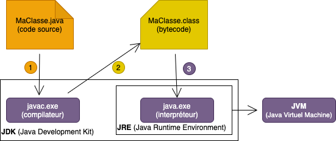

Langage JAVA
Les bases
Module INF330 - Programmation avancée
Gustavo BOBEFF
Qu'est-ce que c'est ?
La technologie Java définit à la fois un langage de programmation orienté objet et une plateforme informatique.
- est né en 1995 chez Sun Microsystems
- Version actuelle Java 8, actuellement Oracle
- est orienté objet
- est fortement typé
- Toute variable doit être déclarée avec un type
- Le compilateur vérifie que les utilisations des variables sont compatibles avec leur type (notamment via un soustypage correct)
- Les types sont d'une part fournis par le langage, mais également par la définition des classes
- est compilé
- En bytecode, i.e., code intermédiaire indépendant de la machine
- est interprété
- Le bytecode est interpété par une machine virtuelle Java
Comment ça marche?
Notions de base
- Class
- Héritage
- Interface
- Polymorphisme
- Generics
- Main
Classe
Une classe est une représentation abstraite d'un objet.
Pour java, tout est décrit en terme de classes et d'objet ... pas d'autre notion ...
Classe : structure
- champs (ou attribut) : l'ensemble des membres définissant l'état d'un objet
- méthodes : une action (fonction, procédure) qui manipule l’état d’un objet
- modificateurs d'accès : une action (fonction, procédure) qui manipule l’état d’un objet
- public : l’accès est possible depuis toute classe du même package
- protected : l’accès est possible depuis toute classe du même package et toute classe fille
- private : l’accès n’est possible que dans la classe elle-même
package monpkg;
public class Voiture {
int compteur;
String immat ;
void rouler (int km) { ... }
boolean changerPneu () { ... }
void afficherAttributs() { ... }
}
Héritage
L’Héritage permet de définir de nouvelles classes à partir de classes existantes.
On utilise le mot clé extends pour indiquer qu'une classe hérite d'une autre.
package monpkg;
public class VoitureElectrique extends Voiture {
int nbBatterie;
int chargeDisponible () { ... }
}
- Si des méthodes de la classe VoitureElectrique (obtenue par héritage de Voiture) ont le même nom que certaines existant dans Voiture, elles viennent les cacher (surcharge).
- Pour appeler une méthode de Voiture dans VoitureElectrique il faut la préfixer par super.
package monpkg;
public class VoitureElectrique extends Voiture {
int nbBatterie;
int chargeDisponible () { ... }
@override
void afficherAttributs() {
// Changer l'affichage/mode/... faire quelque chose de différent!
super.afficherAttributs();
}
}
- Une classe qui hérite d'une autre est une sous-classe et celle dont elle hérite est une super-classe.
- Une classe peut avoir plusieurs sous-classes.
- Une classe ne peut avoir qu'une seule classe mère : il n'y a pas d'héritage multiple en Java.
Interface
- Une interface est une classe abstraite sans données qui ne peut servir qu’à être adjointe à d’autres classes.
- Avec l'héritage multiple, une classe peut hériter en même temps de plusieurs super-classes. Ce mécanisme n'existe pas en Java.
- Les interfaces permettent de mettre en oeuvre un mécanisme de remplacement.
- Une interface est une sorte de standard auquel une classe peut répondre.
- Tous les objets qui se conforment à cette interface (qui implémentent cette interface) possèdent les méthodes et les constantes déclarées dans celle-ci.
- Plusieurs interfaces peuvent être implémentées dans une même classe.
- Les interfaces se déclarent avec le mot clé interface et sont intégrées aux autres classes avec le mot clé implements. Une interface est implicitement déclarée avec le modificateur abstract.
Polymorphisme
- Un objet de classe B dérivée de A peut être utilisé partout où un objet de A peut l’être. Si une méthode de A a été redéfinie dans B on utilisera celle de B.
- A quoi sert le polymorphisme ? Si on définit une classe L qui est une liste d’objets de classe A, on pourra mettre dans cette liste des objets de n’importe quelle classe à partir du moment où elle est hérité de A.